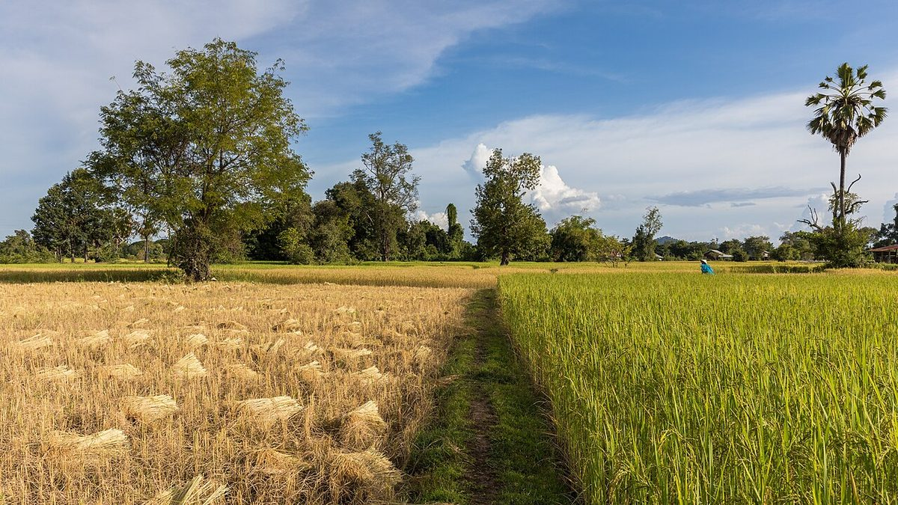

U / Usual
口コミ(イメージ例)
いつか行ってみたい気持ちを、想像で3つ並べたものです。
以下は制作側の創作で、実在のお客様の投稿ではありません。お店への来店や購入の事実も示しません。
- イメージ例
「いつか行ってみたいな」と思います。まずはInstagramをのぞいてみようと思います。
- イメージ例
「Instagramをのぞいてみたい」と思います。行く日を想像するのが今から楽しみです。
- イメージ例
営業時間などが分かったら、行ってみたいです。それまでは、Instagramの更新を楽しみにしています。
